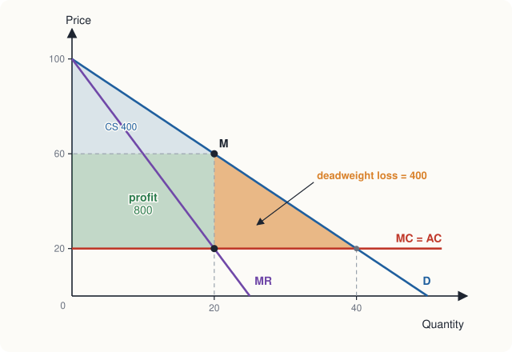

Chapter 9: Monopoly¶
A single seller, its pricing, its costs to society, and how governments respond
Learning outcomes
After studying this chapter you should be able to:
- Define monopoly and explain the barriers to entry that create and protect it.
- Explain why a monopolist's marginal revenue is below its price, and relate marginal revenue to elasticity.
- Find a monopolist's profit-maximising output, price and profit.
- Measure the deadweight loss of monopoly and compare monopoly with perfect competition.
- Explain price discrimination, its conditions and its effects, and calculate prices in two separate markets.
- Explain natural monopoly and compare the main ways of regulating it.
9.1 What is a monopoly?¶
A monopoly is a market with a single seller of a good that has no close substitutes, protected by barriers that prevent other firms from entering. Where a competitive firm is a price taker, a monopolist is a price maker: since it is the only seller, the market demand curve is its own demand curve, and it can choose the price (or the quantity) along it.
Pure monopoly, like perfect competition, is a limiting case. A local water supplier, the only railway in a region, or the holder of a patent on a new medicine comes close. Many firms have some degree of market power, the ability to raise the price above marginal cost without losing all their customers; the analysis of this chapter applies to them too, in diluted form.
Barriers to entry¶
A monopoly lasts only if other firms cannot enter and compete away its profit. The main barriers are these.
- Control of a key resource. A firm that owns the only source of a raw material, or the only suitable site, can keep others out.
- Legal barriers. Governments create monopolies deliberately. A patent gives an inventor the sole right to make and sell an invention for a limited period, commonly twenty years; a copyright does the same for books, music and software. Governments also grant exclusive licences, for example to run a public service.
- Economies of scale. If average cost falls over the whole range of output the market demands, one firm can supply the market more cheaply than two or more. This is natural monopoly, discussed in Section 9.6.
- Network effects. For some goods, each user gains when others use the same product: a telephone network, a social media platform, a payment system. A firm that gets ahead may become dominant because new users join the network that already has the most users.
- Strategic behaviour. An existing firm may deter entry by threatening price wars, tying up distributors, or building more capacity than it needs. Competition law tries to prevent the abusive forms of such behaviour.
9.2 Demand and marginal revenue¶
Because the monopolist faces a downward-sloping demand curve, it can sell more only by lowering its price, and (unless it can charge different prices to different buyers) the lower price applies to all units, not just the extra one. So the extra revenue from one more unit is less than its price.
Consider a monopolist facing the demand curve \(P = 100 - 2Q\).
| Quantity (Q) | Price (P = AR, ₹) | Total revenue (₹) | Marginal revenue per unit over the step (₹) |
|---|---|---|---|
| 0 | 100 | 0 | |
| 5 | 90 | 450 | 90 |
| 10 | 80 | 800 | 70 |
| 15 | 70 | 1,050 | 50 |
| 20 | 60 | 1,200 | 30 |
| 25 | 50 | 1,250 | 10 |
| 30 | 40 | 1,200 | −10 |
Table 9.1. Revenue of a monopolist facing \(P = 100 - 2Q\).
Moving from 15 to 20 units, the monopolist gains revenue from the 5 extra units sold at ₹60 (₹300) but loses ₹10 on each of the 15 units it was already selling at ₹70 (₹150). Net extra revenue is ₹150, or ₹30 per unit, well below the price of ₹60.
For a straight-line demand curve \(P = a - bQ\), total revenue is \(aQ - bQ^2\) and marginal revenue is
The marginal revenue curve starts at the same point as the demand curve but falls twice as steeply. Here \(MR = 100 - 4Q\): it is zero at \(Q = 25\), where total revenue is greatest, and negative beyond.
Marginal revenue and elasticity¶
Chapter 3 showed that total revenue rises with output where demand is elastic and falls where it is inelastic. So marginal revenue is positive where demand is elastic and negative where demand is inelastic. The exact relationship is
A profit-maximising monopolist never produces where marginal revenue is negative, since cutting output would then raise revenue and lower cost. A monopolist always operates on the elastic part of its demand curve.
9.3 Choosing output and price¶
The monopolist maximises profit by the same rule as every firm: produce where marginal revenue equals marginal cost. Then it charges the highest price buyers will pay for that quantity, read from the demand curve.
Suppose the monopolist has a constant marginal cost of ₹20 per unit and no fixed cost, so that its average cost is also ₹20.
- Quantity. Set \(MR = MC\): \(100 - 4Q = 20\), so \(Q = 20\).
- Price. From the demand curve, \(P = 100 - 2(20) = 60\).
- Profit. \((P - AC) \times Q = (60 - 20) \times 20 = 800\) rupees.

At this price, the elasticity of demand is \((\Delta Q/\Delta P)(P/Q) = (-\tfrac{1}{2})(60/20) = -1.5\), and the formula above gives \(MR = 60(1 - 1/1.5) = 20\), equal to marginal cost, as it should be.
The monopolist's markup¶
Rearranging \(MR = MC\) with the elasticity formula gives a useful rule for the monopolist's price:
The left side, the markup as a share of the price, is called the Lerner index of market power. Here it is \((60 - 20)/60 = 2/3 = 1/1.5\). The less elastic the demand, the higher the markup a monopolist can charge. A monopolist whose product has close substitutes faces elastic demand and has little power to raise prices.
Common mistakes
- A monopolist does not charge "the highest possible price". At a very high price it would sell almost nothing. It chooses the price that maximises profit, given the demand curve.
- A monopolist is not guaranteed a profit. If demand is weak relative to costs, the best it can do may still be a loss, and in the long run it will leave the market.
- A monopolist has no supply curve. A supply curve shows how much a price taker supplies at each given price, but the monopolist sets the price itself. Its output depends on the whole shape of demand, through MR.
9.4 The social cost of monopoly¶
Compare the monopoly with a perfectly competitive industry that has the same costs. Competition would drive the price down to marginal cost, ₹20, and output would be where demand meets MC: \(100 - 2Q = 20\), so \(Q = 40\).
| Perfect competition | Monopoly | |
|---|---|---|
| Price | ₹20 | ₹60 |
| Quantity | 40 | 20 |
| Consumer surplus | \(\tfrac{1}{2} \times 40 \times 80 = 1{,}600\) | \(\tfrac{1}{2} \times 20 \times 40 = 400\) |
| Producer surplus (profit) | 0 | \(40 \times 20 = 800\) |
| Total surplus | 1,600 | 1,200 |
| Deadweight loss | 0 | \(\tfrac{1}{2} \times 20 \times 40 = 400\) |
Table 9.2. Monopoly compared with competition at the same costs (all amounts in ₹).
Two different things happen.
- A transfer. ₹800 of what was consumer surplus becomes profit for the monopolist: buyers who still buy pay ₹40 more per unit. Whether this is good or bad is a question of equity, not efficiency; a rupee is a rupee whoever has it.
- A deadweight loss. Units 21 to 40 are not produced, although each would be worth more to some buyer (between ₹60 and ₹20) than it costs to produce (₹20). The lost surplus, ₹400, goes to nobody. This is the inefficiency of monopoly.
The source of the inefficiency is that the monopolist sets price above marginal cost: at the monopoly output, \(P = 60 > MC = 20\). Allocative efficiency (Chapter 8) fails. The monopolist restricts output to keep the price high.
Other costs and possible benefits of monopoly
Economists point to further costs. A monopolist protected from competition may have less pressure to keep costs down, and may spend resources on lobbying to keep its position (sometimes called rent seeking). On the other side, the prospect of monopoly profit is what rewards innovation: patents deliberately grant temporary monopolies so that firms will invest in developing new medicines, technologies and products. The economist Joseph Schumpeter argued that large firms with market power may be the main source of innovation. Policy has to balance these considerations.
9.5 Price discrimination¶
So far the monopolist has charged every buyer the same price. Price discrimination means selling the same good to different buyers at different prices for reasons not related to differences in cost. Examples are everywhere: lower cinema and museum prices for students, cheaper off-peak electricity or travel, airline fares that depend on how early one books, and software sold at lower prices in poorer countries.
Price discrimination is possible only under three conditions.
- The firm must have market power: a price taker cannot set prices at all.
- The firm must be able to identify groups of buyers with different willingness to pay (or different elasticities), for example by age, student status, location or time of purchase.
- Resale must be prevented: otherwise buyers who pay the low price would resell to those charged the high price. Services (haircuts, travel, medical care) are hard to resell, which is why discrimination is common in them.
Types of price discrimination¶
- First-degree (perfect) price discrimination: each buyer is charged exactly her willingness to pay. The firm captures all consumer surplus as profit. Output is the same as under competition (the firm sells to everyone who values the good at more than its marginal cost), so there is no deadweight loss, but consumers get no surplus. It is rare in its pure form, but bargaining over the price of a car or a carpet comes close.
- Second-degree price discrimination: prices vary with the quantity bought, as with bulk discounts or tariffs where the first units of electricity or data cost more than later ones. Buyers sort themselves by choosing how much to buy.
- Third-degree price discrimination: the firm divides buyers into groups and charges each group a single price, as with student and adult tickets.
Third-degree discrimination worked out¶
Example 9.1 Student and adult prices
A cinema has a marginal cost of ₹20 per ticket. It faces two groups: students, with demand \(P_1 = 60 - Q_1\), and other adults, with demand \(P_2 = 100 - Q_2\). Find its prices and profit if it charges each group separately, and compare with a single price for everyone.
Solution. Separate prices. In each market, set \(MR = MC\).
- Students: \(MR_1 = 60 - 2Q_1 = 20\) gives \(Q_1 = 20\) and \(P_1 = 40\).
- Adults: \(MR_2 = 100 - 2Q_2 = 20\) gives \(Q_2 = 40\) and \(P_2 = 60\).
Profit \(= (40 - 20) \times 20 + (60 - 20) \times 40 = 400 + 1{,}600 = 2{,}000\) rupees.
Single price. At prices up to ₹60 both groups buy, and total demand is \(Q = (60 - P) + (100 - P) = 160 - 2P\), or \(P = 80 - \tfrac{1}{2}Q\). Then \(MR = 80 - Q = 20\) gives \(Q = 60\) and \(P = 50\). Students buy 10 and adults 50. Profit \(= (50 - 20) \times 60 = 1{,}800\) rupees.
Discrimination raises profit from ₹1,800 to ₹2,000. Students pay less (₹40 instead of ₹50) and adults pay more (₹60 instead of ₹50).
The pattern is general: the lower price goes to the group with the more elastic demand. At their prices, the students' elasticity is \(-1 \times 40/20 = -2\) and the adults' is \(-1 \times 60/40 = -1.5\). Students have more alternatives and less income, so they are more sensitive to price.
Is third-degree discrimination good or bad for society? It depends. It raises profit and harms the group charged more, but it can increase total output by opening the market to buyers who would be priced out at a single price. When discrimination lets a firm serve a group that would otherwise not be served at all (a medicine sold cheaply in poor countries, for instance), it can make both that group and the firm better off.
9.6 Natural monopoly and regulation¶
A natural monopoly arises when a single firm can supply the whole market at a lower average cost than two or more firms could, because average cost falls over the whole relevant range of output. This happens when there is a large fixed cost and a low marginal cost: water and sewerage pipes, electricity transmission and distribution lines, railway tracks, gas pipelines. Building two sets of water pipes along every street would double the fixed cost for no benefit.
Example 9.2 A natural monopoly
A water company has a fixed cost of ₹8,000 a month and a marginal cost of ₹10 per unit, so \(ATC = 10 + 8{,}000/Q\). Monthly demand is \(P = 100 - Q/10\). Compare (a) one firm producing 800 units with two firms producing 400 each; (b) the unregulated monopoly; (c) marginal cost pricing; (d) average cost pricing.
Solution.
(a) One firm producing 800 units has \(ATC = 10 + 8{,}000/800 = 20\) rupees. Two firms producing 400 each have \(ATC = 10 + 8{,}000/400 = 30\) rupees each. One firm is cheaper: the market is a natural monopoly.
(b) Unregulated monopoly. \(MR = 100 - Q/5 = 10\) gives \(Q = 450\) and \(P = 100 - 45 = 55\). Profit \(= (55 - 10) \times 450 - 8{,}000 = 20{,}250 - 8{,}000 = 12{,}250\) rupees. Price is far above marginal cost, and there is a deadweight loss.
(c) Marginal cost pricing. If a regulator sets \(P = MC = 10\), then \(Q = 900\), which is allocatively efficient. But ATC at 900 units is \(10 + 8{,}000/900 = 18.89\), so the firm loses \((18.89 - 10) \times 900 = 8{,}000\) rupees, its whole fixed cost. It would need a subsidy to stay in business.
(d) Average cost pricing. If the regulator sets the price equal to average cost, the firm just breaks even. Solving \(100 - Q/10 = 10 + 8{,}000/Q\) gives \(Q = 800\) and \(P = 20\) (check: \(ATC = 20\)). Output is much larger than under monopoly and the firm needs no subsidy, but price is still above marginal cost, so a small deadweight loss remains.
Governments respond to natural monopoly in several ways.
- Regulation of prices, by marginal cost pricing with a subsidy, or average cost pricing, or a price cap that falls over time to encourage cost-cutting. Regulators find it hard to know the firm's true costs, and a firm allowed to cover its costs has little reason to reduce them.
- Public ownership, common for water supply, railways and postal services in many countries. A public enterprise can be told to price at marginal or average cost, but it may lack the incentive to be efficient.
- Competition for the market. Where competition in the market is impossible, the right to be the sole supplier for a period can be auctioned to the firm offering the lowest price.
- Separating the network from the service. Often only part of an industry is a natural monopoly (the tracks, the wires, the pipes). The network can be regulated while competition is allowed in the parts that can support it, such as generating electricity or running trains.
Competition policy¶
For monopolies that are not natural, governments rely on competition law (called antitrust law in the United States). Such laws typically prohibit agreements among firms to fix prices or share markets, prohibit the abuse of a dominant position (for example, by predatory pricing to drive out rivals), and allow the authorities to review and block mergers that would substantially reduce competition. In the United States the Sherman Act of 1890 was an early example; in India, the Competition Act, 2002, is enforced by the Competition Commission of India.
9.7 Monopoly and competition compared¶
| Perfect competition | Monopoly | |
|---|---|---|
| Number of sellers | many | one |
| Product | homogeneous | no close substitutes |
| Barriers to entry | none | high |
| Demand facing the firm | horizontal | the market demand curve, downward sloping |
| Marginal revenue | \(MR = P\) | \(MR < P\) |
| Output rule | \(P = MC\) | \(MR = MC\), with \(P > MC\) |
| Long-run economic profit | zero | can be positive |
| Allocative efficiency | yes | no (deadweight loss) |
Table 9.3. Perfect competition and monopoly.
9.8 Summary¶
- A monopoly is a single seller of a good without close substitutes, protected by barriers to entry: control of resources, patents and licences, economies of scale, network effects and strategic behaviour.
- A monopolist must lower its price to sell more, so MR < P. For a straight-line demand curve, MR falls twice as steeply. \(MR = P(1 - 1/|E_d|)\), so a monopolist operates on the elastic part of demand.
- A monopolist produces where MR = MC and charges the price on the demand curve at that output. The markup satisfies \((P - MC)/P = 1/|E_d|\).
- Compared with competition, monopoly charges a higher price and produces less. It transfers surplus from consumers to the firm and causes a deadweight loss, because \(P > MC\).
- Price discrimination requires market power, a way to separate buyers, and no resale. The lower price goes to the more elastic group.
- A natural monopoly has falling average cost over the relevant range. It may be regulated (marginal cost pricing with a subsidy, average cost pricing, price caps) or publicly owned. Other monopolies are addressed by competition law.
9.9 Exercises¶
Exercise 1
A monopolist faces demand \(P = 120 - 3Q\) and has a constant marginal and average cost of ₹30. Find its output, price and profit, and the deadweight loss.
Answer
\(MR = 120 - 6Q = 30\) gives \(Q = 15\), \(P = 120 - 45 = 75\). Profit \(= (75 - 30) \times 15 =\) ₹675. Under competition, \(120 - 3Q = 30\) gives \(Q = 30\). Deadweight loss \(= \tfrac{1}{2} \times (30 - 15) \times (75 - 30) =\) ₹337.50.
Exercise 2
At a monopolist's current output, the price is ₹50 and the price elasticity of demand is −0.8. Explain why it is not maximising profit.
Answer
With \(|E_d| = 0.8 < 1\), demand is inelastic, so \(MR = 50(1 - 1/0.8) = -12.5\): marginal revenue is negative. Cutting output would raise revenue and also lower cost, so profit would rise. A profit-maximising monopolist always produces where demand is elastic.
Exercise 3
The price elasticity of demand for a monopolist's product is −4 at its profit-maximising output, and its marginal cost is ₹30. What price does it charge?
Answer
\((P - 30)/P = 1/4\), so \(P - 30 = P/4\), \(\tfrac{3}{4}P = 30\), \(P = 40\) rupees.
Exercise 4
A theatre has a marginal cost of ₹10 per seat. Senior citizens have demand \(P = 50 - Q\) and others \(P = 90 - Q\). Find the profit-maximising price for each group.
Answer
Seniors: \(50 - 2Q = 10\) gives \(Q = 20\), \(P = 30\). Others: \(90 - 2Q = 10\) gives \(Q = 40\), \(P = 50\). The group with more elastic demand (seniors, elasticity \(-30/20 = -1.5\), against \(-50/40 = -1.25\)) pays less.
Exercise 5
Why do airlines charge very different fares for seats on the same flight? Which conditions for price discrimination do they meet?
Answer
Airlines have market power on many routes. They separate buyers by when they book, whether they can change the ticket, and whether they stay over a weekend: business travellers who book late and need flexibility have less elastic demand and pay more. Resale is prevented because tickets are issued in the traveller's name. So all three conditions hold.
Exercise 6
Explain why marginal cost pricing of a natural monopoly leads to a loss.
Answer
For a natural monopoly, average cost falls over the whole relevant range of output, so marginal cost is below average cost (a falling average means the marginal is below it). If price is set equal to marginal cost, price is below average cost, and the firm loses money on every unit; the total loss in the simple case of constant MC equals the fixed cost.
9.10 Quiz¶
Check your understanding of Chapter 9
Exercise 1
For a monopolist with a straight-line demand curve, the marginal revenue curve
- is the same as the demand curve
- is horizontal
- has the same intercept and twice the slope of the demand curve
- lies above the demand curve
Answer
has the same intercept and twice the slope of the demand curve
Exercise 2
A profit-maximising monopolist produces where
- P = MC
- MR = MC
- P = ATC
- MR = 0
Answer
MR = MC
Exercise 3
A monopolist faces P = 80 − Q and has constant MC = 20. What is its profit-maximising output?
Answer
30
MR = 80 − 2Q = 20 gives Q = 30.
Exercise 4
In the same market (P = 80 − Q, MC = 20), what price does it charge, in rupees?
Answer
50 / ₹50
Exercise 5
The deadweight loss of monopoly arises because
- the monopolist earns a profit
- price is above marginal cost, so some units worth more than their cost are not produced
- the monopolist produces at minimum average cost
- consumers pay less than under competition
Answer
price is above marginal cost, so some units worth more than their cost are not produced
Exercise 6
Under third-degree price discrimination, the lower price is charged to the group whose demand is
- less elastic
- more elastic
- perfectly inelastic
- larger
Answer
more elastic
Exercise 7
A natural monopoly exists when
- a firm owns a natural resource
- average cost falls over the whole range of output the market demands
- the government grants a licence
- demand is inelastic
Answer
average cost falls over the whole range of output the market demands